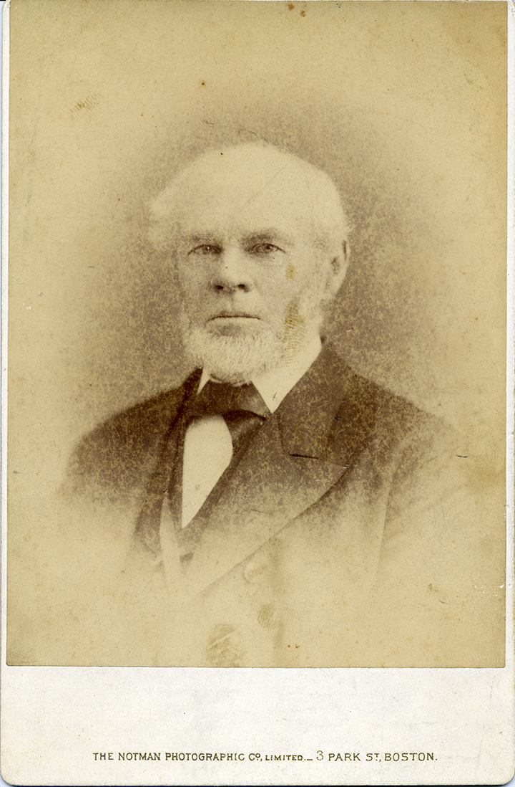
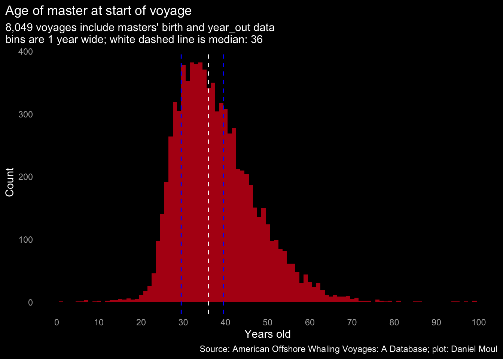
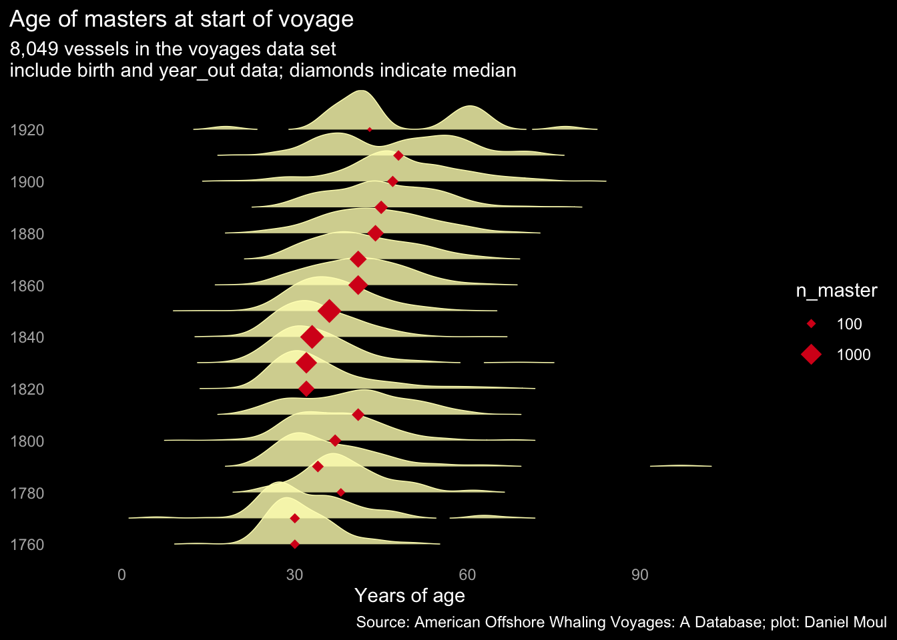
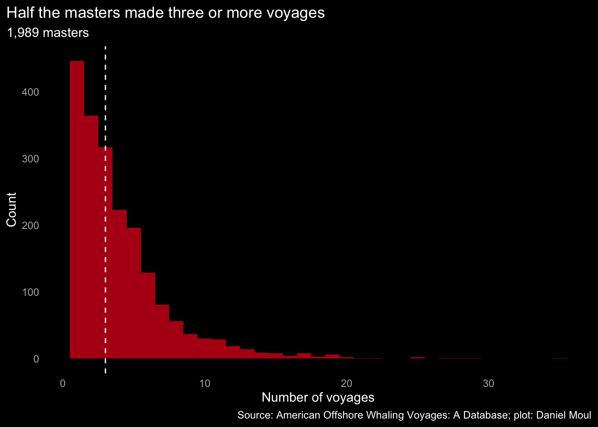
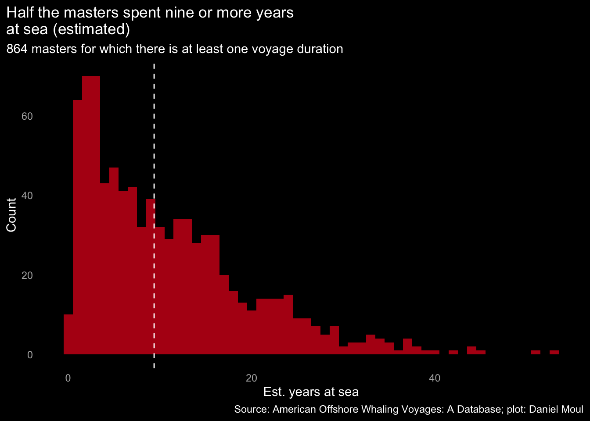
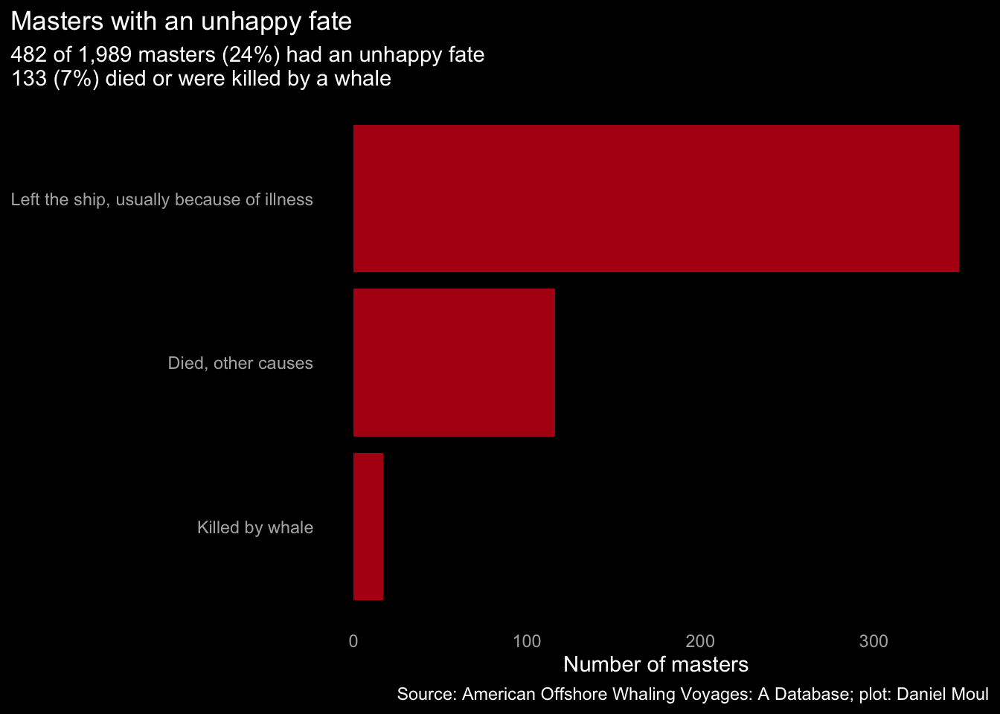

5 The masters
What of the men who captained the whaling vessels? Take for example John Scott DeBlois.

5.1 John Scott DeBlois in the data set
John DeBlois shows up in the data set as third mate, then as master. Not included in the data set is his first voyage on the Ann Alexander as first mate 1845-1849 (Peters 2015). His first as master was on the ill-fated Ann Alexander voyage that set out in 1850. After leading a successful voyage on the Vigilant that returned in 1855 he led two voyages of the new ship Merlin. His wife Henrietta accompanied him on the first (Peters 2015). All were to the Pacific, and with the exception of the loss of the Ann Alexander, all were about three years in duration.
| Voyages of John Scott DeBlois in the crew lists and voyages tables | ||||||||||
| voyage | rank | lay | port | ground | return | Product | master | voyage_id | ||
|---|---|---|---|---|---|---|---|---|---|---|
| bone1 | sperm2 | oil2 | ||||||||
| Isabella : 1841-1845 | 3rd Mate | 1/40 | Fairhaven, MA | Pacific | OK | 1150 | Netcher, George E. | AV07161 | ||
| Ann Alexander : 1850-1851 | Master | 1/17 | New Bedford, MA | Pacific | Lost, sank, wrecked or missing | 577 | Deblois, John Scott | AV01006 | ||
| Vigilant : 1852-1855 | Master | 1/12 | New Bedford, MA | Pacific | OK | 12100 | 337 | 1060 | Deblois, John Scott | AV15161 |
| Merlin : 1856-1859 | Master | New Bedford, MA | Pacific | OK | 2036 | 31 | Deblois, John Scott | AV09617 | ||
| Merlin : 1860-1863 | Master | New Bedford, MA | Pacific | OK | 1461 | 30 | Deblois, John Scott | AV09618 | ||
| 1 Bone in pounds | ||||||||||
| 2 Sperm oil and whale oil in barrels | ||||||||||
5.2 Age
Most whaling masters were in their thirties when starting a whaling voyage. I did not remove from the plot below 72 cases that likely are in error: masters younger than 20 or older than 70.

After the mid-century peak, fewer young men became masters, leading to a rise in the median age.

Half the masters made three or fewer voyages. Some probably made their money then moved on to other pursuits. Some lost their health or their lives. The other half returned to the sea again and again.

5.3 Masters’ years at sea
Whaling became a way of life; half spent nearly a decade to more than 40 years at sea (total years at sea is estimated; see Section 11.1 Dealing with errors, duplicates, and omissions).

5.4 Fate
Some masters did not return home. Some were killed by whales, some by other causes; some who took ill likely died after leaving their vessel.
